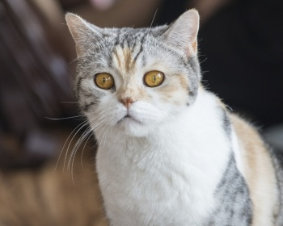

|  | Эта добрая, ласковая, сообразительная кошка с классическим строением тела, гармонично вписывается практически в любое окружение. Имеет средние размеры, уши средней длины и нормальные лапы. Корпус с выраженной грудной клеткой и мускулистый. Американская жесткошерстная кошка - прекрасный компаньон для хозяина любого возраста. Если это пожилой человек, кошка с радостью будет проводить время на коленях и скрашивать повседневное одиночество. Если это семья с детьми, кошка станет лучшим другом для каждого, при этом не причиняя никаких неудобств негативными чертами характера. Средний срок жизни стандартный - около 16 лет. |